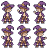

주인공 · IDLE·제조·전달 v4
제조는 모자와 몸까지 왼쪽으로. 전달은 허리와 발을 고정하고 팔을 움직입니다.
외곽선·눈피부·셔츠머리·반바지·부츠모자·망토장식
이미지 불러오는 중
IDLE의 위아래 호흡·깜빡임을 다시 연결했습니다. 모자 끝·망토 끝·앞머리 결도 함께 움직이며 손 접점과 허리는 고정합니다.
움직임 확대 · 6배 검사
두 눈과 갈색 머리, 모자 착용점, 내려둔 반대팔을 확인합니다.
위 장면은 공통3배, 이 칸은 검사용6배입니다.
6개 키포즈 · 공통3배

손님들과 같은 배율